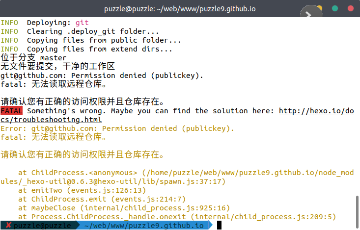
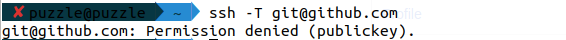
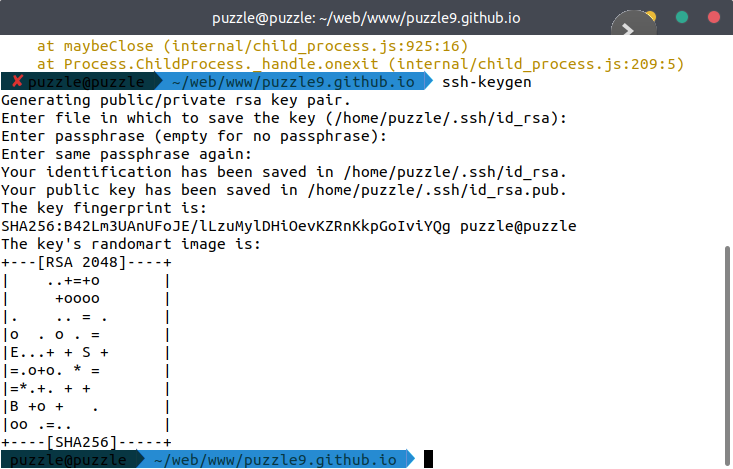
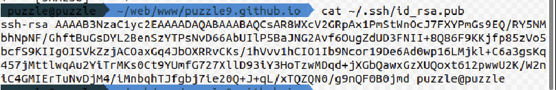
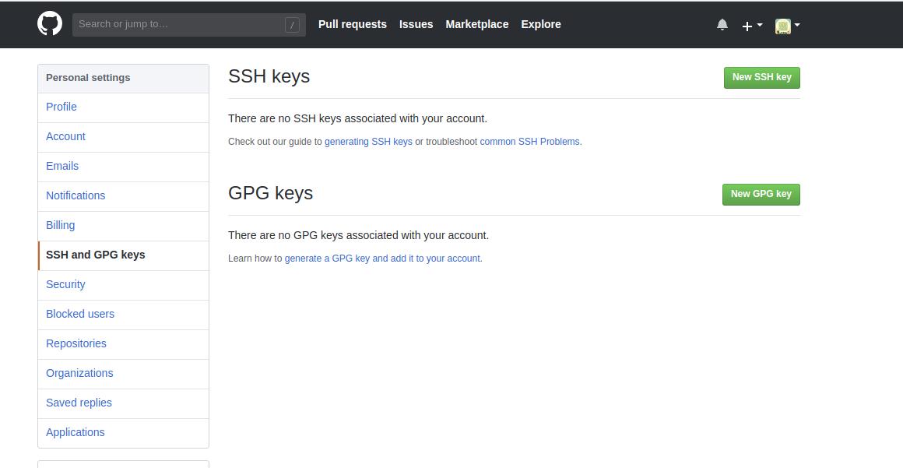
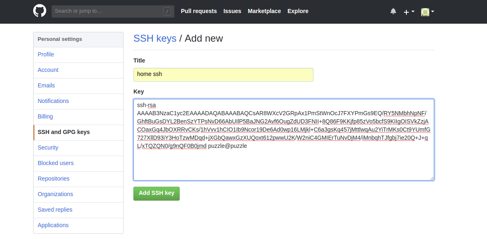
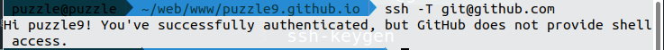

Github-Permission-denied
问题
使用 git 给 github 推送 时遇到

git@github.com: Permission denied (publickey).
解决方案
这个是没通过认证的情况
ssh -T git@github.com

输入 一路回车下去
ssh-keygen

复制 ~/.ssh/id_rsa.pub 内容 到 SSH keys
cat ~/.ssh/id_rsa.pub

ssh-rsa AAAAB3NzaC1yc2EAAAADAQABAAABAQCsAR8WXcV2GRpAx1PmStWnOcJ7FXYPmGs9EQ/RY5NMbhNpNF/GhftBuGsDYL2BenSzYTPsNvD66AbUIlP5BaJNG2Avf6OugZdUD3FNII+8Q86F9KKjfp85zVo5bcfS9KIIgOISVkZzjACOaxGq4JbOXRRvCKs/1hVvv1hCIO1Ib9Ncor19De6Ad0wp16LMjkl+C6a3gsKq457jMttlwqAu2YiTrMKs0Ct9YUmfG727XllD93iY3HoTzwMDqd+jXGbQawxGzXUQoxt612pwwU2K/W2niC4GMIErTuNvDjM4/iMnbqhTJfgbj7ie20Q+J+qL/xTQZQN0/g9nQF0B0jmd puzzle@puzzle

这个名字不重要 主要是 key

保存后在试下
ssh -T git@github.com
